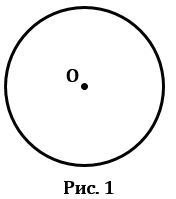
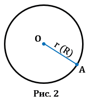
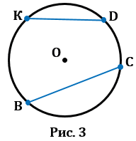
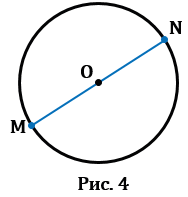
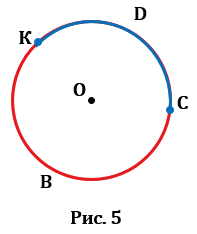

Окружность - это замкнутая кривая, которая состоит из всех точек на плоскости, равноудалённых от заданной точки.Заданная точка является центром окружности. На Рис.1 точка О - центр окружности.

1. Радиус - это отрезок, соединяющий центр с какой-либо точкой окружности. У любой окружности можно провести бесконечно много радиусов, которые будут иметь одну и ту же длину. Обозначают радиус r или R. На Рис.2 представлена окружность с центром в точке О радиусом ОА.

2. Хорда - это отрезок, соединяющий две точки окружности.У любой окружности можно провести бесконечно много хорд. На Рис.3 ВС и KD - хорды окружности с центром в точке О.

3. Диаметр - это отрезок, соединяющий две точки окружности и проходящий через ее центр (т.е. диаметр - это частный случай хорды). У любой окружности можно провести бесконечно много диаметров, которые будут иметь одну и ту же длину. На Рис.4 МN - диаметр окружности с центром в точке О. Обозначают диаметр d или D. Диаметр в два раза больше радиуса, т.е. d = 2r (D = 2R), откуда r = d : 2 (R = D : 2), следовательно, центр окружности (точка О) является серединой диаметра.

4. Дуга - это часть окружности, ограниченная двумя точками. На Рис.5 KDC и KBC - дуги, ограниченные точками К и С.
